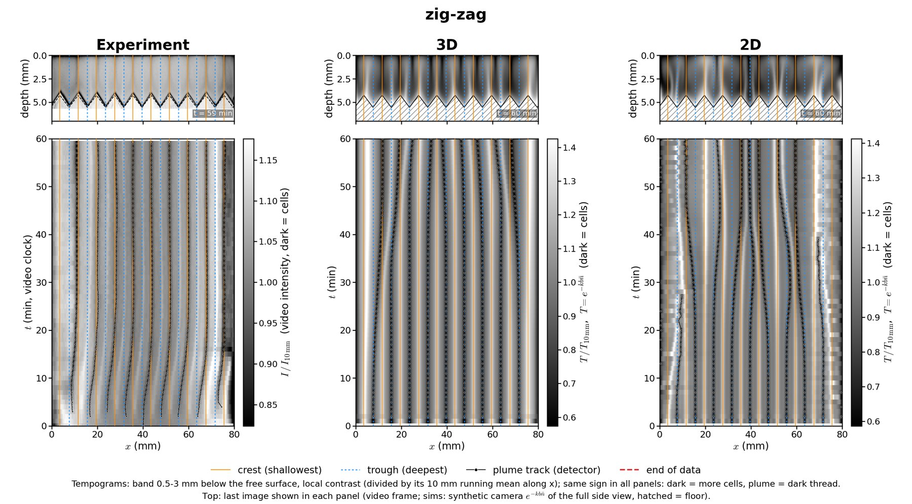

Bioconvection — micro-algae suspensions over a structured floor
bio-active fluids · with Hélène de Maleprade (∂'Alembert)
Chlamydomonas are swimming micro-algae, slightly denser than water, that swim upwards. Gathered under the surface, the suspension becomes top-heavy and overturns into plumes and rolls: bioconvection, first drawn by Wager in 1911. In the experiments at ∂'Alembert, Hélène changes the environment — the light, the depth, the bathymetry of the cell — and the plumes answer: over a zigzag floor they are born in the troughs and end up on the crests.
On my side I write continuum models of the suspension (cell density, orientation, flow) and simulate them in 2D and 3D. Without noise the model lingers for a very long time before organising; with noise it falls at once into the state seen in the experiments — which points to an instability, analysed with the tools of hydrodynamic stability: the base state with the cells piled under the surface, its eigenmodes and growth rates on flat, sloped and zigzag floors. An agent-resolved model (a few thousand swimmers coupled through the fluid) checks the continuum one. Next: coupling the cells' own oxygen consumption to the flow — what happens when the algae make their water anoxic.
With Hélène de Maleprade (experiments, ∂'Alembert), M. Givaudan (∂'Alembert; C. R. Physique 2026), A. Huyghues-Despointes (Petri-dish experiments), Pier Giuseppe Ledda (University of Cagliari; complex interfaces, BRIDGE visit 2026). Internship open for 2027 — see Open positions.

